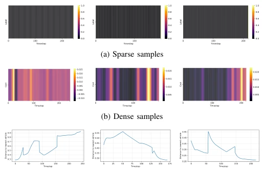
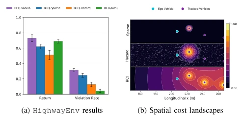
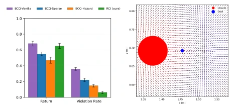
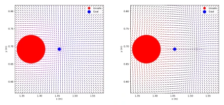

This paper provides a potent remedy for the "cost annotation famine" in Offline Safe Reinforcement Learning (Safe Offline RL). Instead of employing fancy generative models, the authors use classic Return Decomposition (Return Decomposition) to forcefully decompose sparse "stop-feedback" (stop-feedback) into dense per-step costs. Theoretically, it is robust, proving this transformation does not alter the optimal policy set, belonging to "lossless compression"; Practically, it indeed makes the Cost Critic (Cost Critic) much easier to train. However, one should not rejoice too early; this method still cannot escape the inherent limitations of offline RL: if the dataset is full of crashing trajectories, the policy remains conservative to the point of being unable to act. Moreover, it learns statistical correlation rather than causality, and may fail when encountering out-of-distribution situations. Overall, it is a pragmatic trick, suitable for dirty data scenarios where only "crashed or not" labels exist.
The core formalization of Safe Reinforcement Learning is Constrained Markov Decision Process (CMDP) [3], but this usually assumes access to dense per-step cost annotations. In reality, safety supervision is often trajectory-level "stop-feedback" (stop-feedback), meaning there is only a binary signal when the first unsafe transition occurs [17]. Existing offline Safe RL methods mostly rely on dense costs [1], [4], which is too costly during large-scale data collection. Although TraCeS [10] attempts to learn from sparse feedback, it requires online querying of annotators, making it unsuitable for offline scenarios with fixed datasets. Furthermore, directly ignoring costs or using only terminal labels leads to difficulty in Credit Assignment (Credit Assignment), making it hard for the policy to learn when to avoid risks. This paper aims to solve how to recover dense costs from sparse signals without additional annotations to support offline safe policy learning.
The RCI framework is divided into three stages: expert feedback collection, return decomposition-based cost inference, and constrained offline policy learning. First, collect trajectory-level stop feedback and mark the first unsafe step. Second, the core innovation lies in using sequence models (e.g., LSTM) to predict cumulative cost, obtaining per-step cost via difference, and adding a compensation term at the terminal to ensure Return-Equivalence (Return-Equivalent). Theoretical proof shows this transformation preserves the feasible policy set and optimal Lagrange multipliers of the CMDP. Finally, input the generated dense cost dataset into standard constrained offline RL algorithms (e.g., BCQ-Lagrangian) for training. This modular design allows replacing any return decomposition algorithm (e.g., RUDDER [8]) or Safe RL algorithm. The key lies in that although model predictions may be inaccurate, the compensation term ensures total cost conservation, allowing the Cost Critic to obtain denser supervision signals, thereby improving training conditions.

Fig. 5. Cost inference on three sampled trajectories from HighwayEnv. (5a) shows the sparse stop-feedback labels (a single terminal cost at the unsafe step). (5b) shows the dense per-step costs inferred via return decomposition, with higher values assigned to precursor actions that contributed to the eventual violation. (5c) shows the distance to the nearest vehicle over time for the same trajectories; note that each trajectory is truncated at the first unsafe transition, as recorded in the offline dataset.
Tested on two benchmarks, HighwayEnv and Safe-FetchReach, using datasets generated by PPO containing unsafe behaviors. Baselines include reward-only, sparse cost labels, and classifier-based Hazard methods. Results show that RCI, while maintaining task return without significant decline, has a Violation Rate (Violation Rate) significantly lower than baselines, approximately one-fifth of the sparse method. Ablation studies show RCI is robust to different behavior policy distributions (PPO/Random/Mixed) and label noise (Noisy/Adversarial). Visualizations show RCI can learn coherent spatial risk structures, while sparse methods only have costs at the terminal. This proves the feasibility of recovering per-step safety semantics from trajectory-level stop signals.

Fig. 1. Performance on HighwayEnv. (a) Normalized return and violation rate across baselines and RCI; bars show means over 5 seeds with standard error. The two-sample t-test between RCI and BCQ-Vanilla yields t = 0.9962, p = 0.3483. (b) Learned cost critics as heatmaps over road geometry for Sparse, Hazard, and RCI (top to bottom); warmer colors indicate higher predicted cumulative cost.

Fig. 4. Performance on Safe-FetchReach. (a) Normalized return and violation rate; bars show means over 5 seeds with standard error. (b) Vector field of RCI policy under a restrictive safety budget; arrows show action directions, color encodes critic value estimates.

Fig. 7. Vector fields of RCI policies in Safe-FetchReach across three safety budgets. Arrows depict policy actions and color encodes the critic’s value estimates. (7b) Higher budgets permit direct goal approach. (7c) Inter- mediate budgets balance hazard avoidance with goal-reaching. (7d) Restrictive budgets enforce strong hazard avoidance at the expense of task success.